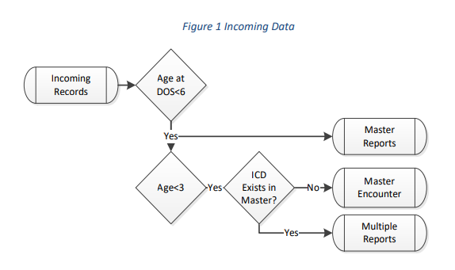

Contents
Introduction and Program History
Registry Description
Data Collection
Data Management
Data Collection Considerations
Introduction and Program History
All Data reported by the Registry through the Data book published in 2012 are based on the number of reports received for an individual and condition combination.
Registry data reported from November 30th, 2018 forward follows the data collection process described below.
History
- 1996 Data collection begins for all children born in Alaska less than one year of age, from any data source and provider. Medical record review is initiated for selected conditions.
- 2005 Data book published.
- 2006 Registry expands data collection to six years of age.
- 2007 Registry expands data collection to include Medicaid data.
- 2012 Data Book published.
- 2012 Medical record review of FAS cases only.
- 2014 Medical record review resumed on national congenital conditions.
- 2015 - The Alaska Automated Information System (AK AIMS) Behavioral Health Data was included in the collection data set.
- 2015 - Transition from ICD-9 to ICD-10 CM coding systems occurred in October 2015. This transition resulted in significant changes in the classification of reported conditions. A crosswalk was developed using the National Birth Defect Prevention Network code translation guide with additions for Alaska specific reporting. This crosswalk was used to transition all registry reports from 2007 forward. Caution should be taken in interpreting trends lines due to significant differences in the two coding systems.
- 2015 - Comprehensive program review was undertaken. This review resulted in significant changes to program methodology and operations.
- 2015 - Data collection methodology changed from all data sources to major data sources, aggregators, and specialty agencies.
- 2016 - Data analysis methodology updated.
- 2018 – The registry updated its reporting provisions outlined in Alaska Administrative Code (7 AAC 27.012). Updated regulations changed data collection methodology to reduce the reporting frequency from within 3 months of the date of service to semiannual reporting; restrict reporting to children aged less than 3 years old at the time of diagnosis; include maternal identifiers (name and date of birth) as well as agency national provider identifiers; and expanded the list of organizations required to report to include all private/public health insurance organizations and diagnostic laboratories operating in the state.
Registry Description
The registry is operated as a modified passive surveillance system. Data collection relies on reporting by major hospitals, specialty clinics, private/public health insurance organizations, diagnostic labs and medical record aggregators. Surveillance is described below.
Data Collection
Incoming Reports
Reports come to the agency in a wide variety of formats, and may require significant adjustment prior to input. The current focus concentrates on systems and agencies that either produce or acquire large amounts of diagnostic data from wide sources throughout the state.
Incoming Data Criteria
All reports are filtered to accept - Children less than three (3) years of age at the time of diagnosis. Diagnosis codes contained in the ICD Master list maintained by the Registry (see Registry Reporting Guide for a list of ICD codes and groups).
Data Management
- All records that meet the above criteria are added to the Registry data system. Incoming data is parsed into three major categories based on each unique combination of individual (name+dob+sex) and reported condition (ICD-10CM code). ** All incoming records are added to the master report data set. ** New name and diagnostic code combinations that meet all screening criteria and are less than three years of age are added to the master encounter data set. ** Subsequent reports received for an existing name and diagnostic code combination in the master encounter data set are added to the agency reports data set.

All encounters are compared to birth certificate data to determine if reported children were born in the State of Alaska.
Data sets of are finalized by the end of the first quarter each calendar year. All children in the system who reached their 3 rd birthday during the prior year are removed from the active collection system and added to the registry review data set.
Data Collection Considerations
Age Ranges for Estimates
Alaska statute requires health care providers to report all children diagnosed or treated with a reportable birth defect up to age three years at the time of diagnosis. This collection requirement creates a three year lag in delivering data with complete estimates. To reduce this inherent lag, and produce more timely data, all Registry estimates are restricted to children reported, diagnosed, or treated before age three years.
Report Collection
Health care providers are required to report to the registry semiannually. The frequency and completeness of reports vary greatly by agency and provider. Differences in clinical and diagnostic practice, expertise, and simple miscoding, all contribute to the variability in case detection, classification, and accuracy of reports received by the Registry. This reporting variability influences estimates from year-to-year. Attempts are made by the ABDR program to ensure major reporting entities are current before annual closeouts but variation persists. Reported ICD codes may or may not reflect actual diagnostic conditions. Research has documented significant variation in the positive predictive values in ICD codes by reportable birth defects (see End Notes). The Registry incorporates estimates of ICD code predictive value into the adjusted prevalence estimates (see medical record review, and calculation of prevalence estimates below). Caution should be used in interpreting reported estimates and in comparing with national numbers.
Medical Records Review
The ABDR augments its passive report collection by conducting medical records review of specific conditions. Prior to 2014, medical record review was conducted for all Anencephalus, Cleft lip and Cleft Palate, Gastroschisis, Hypospadias, Omphalocele, Spina Bifida, and Trisomy’s 13, 18, and 21 reported to the registry (limited resource capacity resulted in only subsets of the conditions being reviewed).
Current practice is to select a representative sample of a reported condition to undergo a medical record review to determine the accuracy of the reported diagnosis. The registry is in process of sampling and reviewing all conditions recommended by The National Birth Defects Prevention Network (NBDPN). Case confirmation conforms to the NBDPN guidelines (see End Notes). Upon completion of review, a case confirmation probability is established and used to inform the prevalence estimates.
As additional condition samples are drawn, medical records abstraction and confirmation occur, specific defect estimates (DE) will be updated and expanded.
End Notes:
- Schoellhorn KJ., Collins S. Evaluation of passive surveillance for NTD-affected births in Alaska: a case verification study, birth years 1996-2007. J Registry Manag, 2010, 37(1):4-9 http://www.nbdpn.org/docs/Appx3__1_BDDescriptions2015.pdf